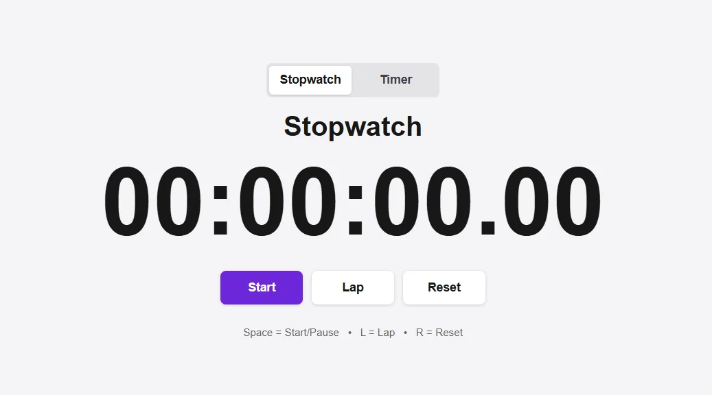
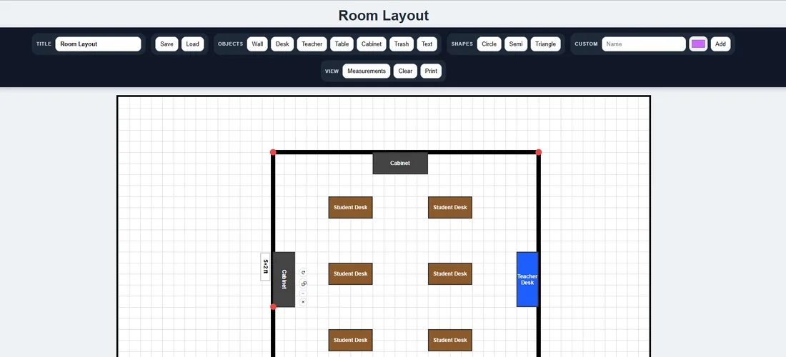
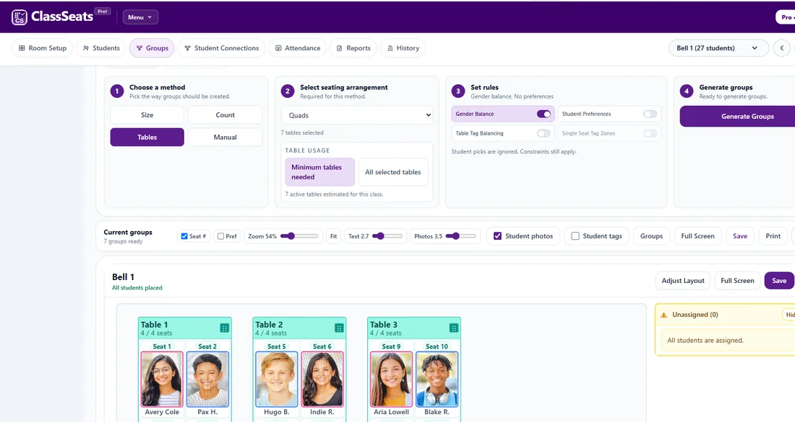

Classroom Stopwatch
A focused classroom tool built to meet a specific need without extra distractions.
Try the stopwatch ↗Different-sized problems, the same starting point: a teacher knew what they wanted to accomplish.

A focused classroom tool built to meet a specific need without extra distractions.
Try the stopwatch ↗
A more ambitious classroom design tool that grew out of everyday teaching work.
Explore the layout planner ↗
What began as a way to give students a voice in group choices became a full classroom organizational system.
Explore ClassSeats ↗